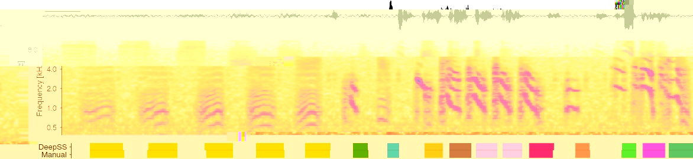

Evaluate a bird song network¶
%config InlineBackend.figure_format = 'jpg' # smaller mem footprint for page
import zarr
import librosa.feature, librosa.display
import numpy as np
import matplotlib.pyplot as plt
import colorcet as cc
import sklearn.metrics
import scipy.stats
from matplotlib.colors import ListedColormap
import dss.utils, dss.utils_plot, dss.predict, dss.data, dss.models, dss.train, dss.io, dss.evaluate, dss.segment_utils
plt.style.use('ncb.mplstyle')
Load data¶
savename = '/Users/janc/Dropbox/dss.paper/sober/20200418_215107'
params = dss.utils.load_params(savename)
store = zarr.open(savename + '.zarr')
fs = 32_000 # Hz
# sequence of ints - "0" if no song, >0 if syllable
# labels_pred = store['labels_pred'][:fs * 500]
save_name = '/Users/janc/Dropbox/dss.paper/models/sober_allInd/20200418_215107'
gap_dur = 5 / 1000 # 5 ms
min_len = 30 / 1000 # 30 ms
# x_test = store['x_test'][:]
# events, segments, y_pred = dss.predict.predict(x_test[:fs * 500], model_save_name=save_name, verbose=1, segment_minlen=min_len, segment_fillgap=gap_dur)
# np.save('confidence_scores.npy', y_pred)
y_pred = np.load('confidence_scores.npy')#[:1_000_000]
labels_test = store['labels_test'][:y_pred.shape[0]]
Predict syllable labels¶
Based on majority vote
# get true syllable labels from predictions
_, segments_pred = dss.predict.predict_song(y_pred, params,
segment_minlen=min_len,
segment_fillgap=gap_dur)
# get true syllable labels from training targets
_, segments_test = dss.predict.predict_song(labels_test, params,
segment_minlen=min_len,
segment_fillgap=gap_dur)
# re-run, using the on- and offsets of predicted syllables as a reference for determining the "true" labels
_, segments_test_pred = dss.predict.predict_song(labels_test, params,
segment_ref_onsets=segments_pred['onsets_seconds'],
segment_ref_offsets=segments_pred['offsets_seconds'],
segment_minlen=min_len,
segment_fillgap=gap_dur)
labels_pred = segments_pred['samples']
labels_test = segments_test['samples']
min_len = min(len(labels_test), len(labels_pred))
labels_pred = labels_pred[:min_len]
labels_test = labels_test[:min_len]
syllable_true_pred = segments_test_pred['sequence']
syllable_pred_pred = segments_pred['sequence']
Inspect data and predictions¶
t0 = 532_000
t1 = t0 + 60_000
x = store['x_test'][t0:t1,0]
T = np.arange(len(x))/fs
hop_length = 100
specgram = librosa.feature.melspectrogram(x, sr=32_000, n_fft=512+256, hop_length=hop_length, power=1)
specgram = librosa.amplitude_to_db(specgram, np.max)
labels_all = np.stack((labels_pred[t0:t1].T, labels_test[t0:t1].T))
labels_all = np.unique(labels_all, return_inverse=True)[1].reshape((2, -1))
cmap = cc.palette['glasbey_light'][1::2]
cmap = list(cmap)[:12]
cmap.insert(0, (0.9, 0.9, 0.9))
cmap = ListedColormap(cmap)
plt.gcf().set_size_inches(20, 10)
plt.subplot(913)
plt.plot(T, x, c='k', linewidth=0.5)
plt.axis('tight')
dss.utils_plot.scalebar(.1, units='seconds', location='center left',
font_properties={'size': 7})
dss.utils_plot.remove_axes(all=True)
ax = plt.subplot(312)
im = librosa.display.specshow(specgram,
sr=32_000, hop_length=hop_length, y_axis='mel', x_axis='s',
cmap=ListedColormap(list((cc.CET_L17))))
freqs = 1000 * 2.0 ** np.arange(-1, 4)
plt.yticks(freqs, freqs/1000)
plt.ylim(300)
plt.ylabel('Frequency [kHz]')
plt.clim(-70, 0)
ax.spines['bottom'].set_visible(False)
plt.xticks(())
plt.xlabel(None)
ax = plt.subplot(18,1, 13)
plt.imshow(labels_all, cmap=cmap)
plt.axhline(0.5, c='k', alpha=0.1)
plt.yticks((0, 1), labels=['Manual', 'DeepSS']);
ax.spines['bottom'].set_visible(False)
plt.xticks(())
dss.utils_plot.remove_axes()

Performance metrics¶
Sample-wise¶
cr = sklearn.metrics.classification_report(labels_test[::10], labels_pred[::10],
output_dict=False,
labels=np.arange(1, 50))
print(cr)
precision recall f1-score support
1 0.96 0.96 0.96 8218
2 0.99 0.99 0.99 51073
3 0.96 0.98 0.97 10210
4 1.00 0.98 0.99 3193
5 0.99 0.99 0.99 44374
6 0.93 0.80 0.86 4208
7 0.00 0.00 0.00 0
8 0.00 0.00 0.00 0
9 0.98 0.98 0.98 29245
10 0.00 0.00 0.00 0
11 0.00 0.00 0.00 0
12 0.00 0.00 0.00 0
13 0.00 0.00 0.00 0
14 0.96 0.99 0.98 4086
15 0.93 0.99 0.96 3850
16 0.99 0.99 0.99 6240
17 0.99 1.00 0.99 7110
18 0.99 0.99 0.99 13206
19 1.00 0.99 1.00 8681
20 0.99 0.99 0.99 4639
21 0.99 0.98 0.98 4200
22 0.98 0.99 0.98 32180
23 1.00 0.99 0.99 7387
24 0.99 0.99 0.99 9382
25 0.00 0.00 0.00 0
26 0.00 0.00 0.00 250
27 0.98 0.87 0.92 15947
28 0.70 0.94 0.80 4453
29 0.99 1.00 0.99 42700
30 0.98 0.99 0.99 19302
31 0.98 0.98 0.98 17294
32 0.99 0.99 0.99 9594
33 1.00 1.00 1.00 22416
34 0.00 0.00 0.00 0
35 0.98 0.89 0.93 41048
36 0.92 0.98 0.95 8352
37 0.99 0.99 0.99 6309
38 0.83 0.95 0.89 11832
39 0.00 0.00 0.00 0
40 0.99 0.98 0.99 25383
41 0.99 0.99 0.99 32669
42 1.00 0.99 1.00 19420
43 1.00 0.99 0.99 9953
44 1.00 0.99 0.99 12093
45 0.98 0.98 0.98 4405
46 0.97 0.92 0.95 2842
47 0.00 0.00 0.00 0
48 0.98 0.96 0.97 28921
49 0.00 0.00 0.00 0
micro avg 0.98 0.97 0.98 586665
macro avg 0.73 0.73 0.73 586665
weighted avg 0.98 0.97 0.98 586665
Syllable labels¶
conf_mat_pred = sklearn.metrics.confusion_matrix(syllable_true_pred[syllable_true_pred!=26],
syllable_pred_pred[syllable_true_pred!=26],
labels=np.arange(0, 50))
# remove syllables not in the test set
good_sylls = np.sum(conf_mat_pred, axis=0)>1
good_sylls[0] = True # include 0 to depict false positives and false negatives
conf_mat_pred = conf_mat_pred[good_sylls,:]
conf_mat_pred = conf_mat_pred[:, good_sylls]
plt.gcf().set_size_inches(8.5, 2)
plt.subplot(131)
plt.imshow(conf_mat_pred / np.sum(conf_mat_pred, axis=0), cmap='gray_r')
plt.colorbar()
plt.ylabel('Manual')
plt.xlabel('DeepSS')
plt.subplot(132)
plt.imshow(np.log2(conf_mat_pred / np.sum(conf_mat_pred, axis=0)), cmap='gray_r')
plt.colorbar()
plt.title('Log scaled')
plt.show()
print('Micro avg', np.nanmean(np.diag(conf_mat_pred / np.nansum(conf_mat_pred, axis=0))))
print('Global avg', np.nansum(np.diag(conf_mat_pred)) / np.nansum(conf_mat_pred))
print(conf_mat_pred.shape)
# syllable "26" is mislabelled
syllable_true_pred[syllable_true_pred==26] = 0
syllable_pred_pred[syllable_true_pred==26] = 0
cr = sklearn.metrics.classification_report(syllable_true_pred[syllable_true_pred>0],
syllable_pred_pred[syllable_true_pred>0],
output_dict=False)
print(cr)
print('FN rate (%) ', 100*np.mean(syllable_true_pred==0), 100*np.mean(syllable_pred_pred==0))

Micro avg 0.9632938342579566
Global avg 0.9915025106218617
(38, 38)
precision recall f1-score support
0 0.00 0.00 0.00 0
1 0.97 0.98 0.98 63
2 1.00 0.99 1.00 363
3 1.00 1.00 1.00 47
4 1.00 1.00 1.00 14
5 1.00 1.00 1.00 217
6 1.00 1.00 1.00 28
9 0.98 1.00 0.99 118
14 1.00 1.00 1.00 35
15 1.00 1.00 1.00 35
16 1.00 1.00 1.00 35
17 1.00 1.00 1.00 35
18 1.00 1.00 1.00 70
19 1.00 1.00 1.00 35
20 1.00 1.00 1.00 34
21 1.00 1.00 1.00 34
22 0.99 1.00 1.00 114
23 1.00 1.00 1.00 34
24 1.00 1.00 1.00 33
27 1.00 1.00 1.00 40
28 1.00 1.00 1.00 29
29 1.00 1.00 1.00 82
30 0.99 1.00 0.99 81
31 1.00 0.99 0.99 72
32 1.00 1.00 1.00 43
33 1.00 1.00 1.00 43
35 0.99 0.93 0.96 176
36 0.93 1.00 0.96 40
37 1.00 1.00 1.00 38
38 0.77 0.96 0.86 28
40 1.00 1.00 1.00 131
41 0.99 1.00 1.00 117
42 1.00 1.00 1.00 55
43 1.00 1.00 1.00 48
44 1.00 1.00 1.00 31
45 1.00 1.00 1.00 31
46 1.00 0.94 0.97 17
48 0.99 0.99 0.99 142
accuracy 0.99 2588
macro avg 0.96 0.97 0.97 2588
weighted avg 0.99 0.99 0.99 2588
FN rate (%) 0.07722007722007722 0.03861003861003861
Timing of syllable on- and offsets¶
tol = 0.01 # seconds
nn_dist_all = np.zeros((0,))
for ii in range(2):
if ii==1:
times_test = segments_test['onsets_seconds'] # event_onsets_true
times_pred = segments_pred['onsets_seconds'] # event_onsets_pred
print({"ONSETS:"})
else:
times_test = segments_test['offsets_seconds'] # event_offsets_true
times_pred = segments_pred['offsets_seconds'] # event_offsets_pred
print({"OFFSETS:"})
d, nn_pred_pulse, nn_true_pulse, nn_dist = dss.event_utils.evaluate_eventtimes(times_test, times_pred, fs, tol)
print(f" FP {d['FP']}, TP {d['TP']}, FN {d['FN']}")
print(f" precision {d['precision']:1.2f}, recall {d['recall']:1.2f}, f1-score {d['f1_score']:1.2f}")
print(f' jitter: mean {np.mean(nn_dist[nn_dist<tol]) * 1000:1.2f} ms, median {np.median(nn_dist[nn_dist<tol]) * 1000 :1.2f} ms, 95th percentile {np.percentile(nn_dist[nn_dist<tol], 95) * 1000 :1.2f} ms')
print(f' jitter full: mean {np.mean(nn_dist) * 1000:1.2f} ms, median {np.median(nn_dist) * 1000 :1.2f} ms, 95th percentile {np.percentile(nn_dist, 95) * 1000 :1.2f} ms')
nn_dist_all = np.concatenate((nn_dist_all, nn_dist))
print(f'jitter all full: mean {np.mean(nn_dist_all) * 1000:1.2f} ms, median {np.median(nn_dist_all) * 1000 :1.2f} ms, 95th percentile {np.percentile(nn_dist_all, 95) * 1000 :1.2f} ms')
plt.hist(nn_dist_all * 1000, bins=np.linspace(0, 4, 50), density=True, color=[0, .67, 0, 0.25])
plt.axvline(np.median(nn_dist_all * 1000), color='green', label='Median')
plt.xlabel('Temporal error [ms]')
plt.ylabel('PDF');
plt.xlim(0, 4)
plt.xticks(np.arange(0, 4))
plt.legend()
plt.show()
{'OFFSETS:'}
FP 32, TP 2558, FN 26
precision 0.99, recall 0.99, f1-score 0.99
jitter: mean 0.74 ms, median 0.47 ms, 95th percentile 2.44 ms
jitter full: mean 3.10 ms, median 0.47 ms, 95th percentile 2.77 ms
{'ONSETS:'}
FP 32, TP 2558, FN 26
precision 0.99, recall 0.99, f1-score 0.99
jitter: mean 0.43 ms, median 0.22 ms, 95th percentile 1.41 ms
jitter full: mean 2.86 ms, median 0.22 ms, 95th percentile 1.66 ms
jitter all full: mean 2.98 ms, median 0.31 ms, 95th percentile 2.44 ms